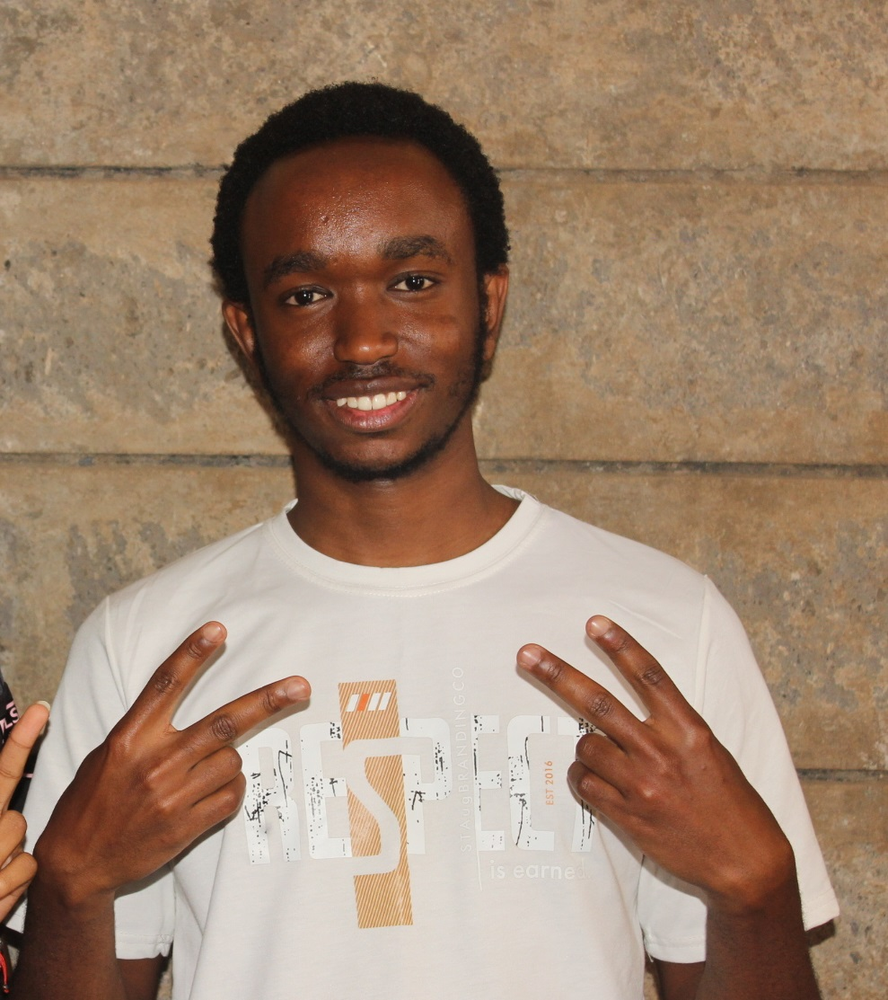

Our Directors
Meet the passionate leaders serving across the various ministries of Teens Aloud Foundation, empowering young people to discover purpose, grow spiritually, and impact society.


Faithful Kwame Amponsem
Country Director • KenyaOverseeing the day-to-day operations and strategic initiatives of Teens Aloud Foundation Kenya, guiding sub-ministries, empowering leaders, and ensuring the organization's vision and mission are fulfilled across the country.
.jpg)
Vincent Omondi Owino
Deputy Country Director • KenyaAssisting in the leadership and coordination of Teens Aloud Foundation Kenya, supporting sub-ministry growth, empowering leaders, and helping ensure the organization's vision and mission are achieved nationwide.

Grace Gichia Njeri
Director • Love FellowshipStrengthening fellowship communities where members grow in faith, accountability and authentic relationships.


Sharon Lusenaka
Director • Aloud CareProviding compassionate leadership in outreach and community care, coordinating initiatives that demonstrate Christ's love through service, support, and meaningful acts of kindness to those in need.

Stanley Emilio
Director • Aloud CreativeLeading young creatives to use media, art, design and innovation to glorify God and impact lives.

Molly Joy Gakaya
Director • Aloud ChoirGuiding worshippers and singers in creating powerful worship experiences that inspire faith and transformation.


Jude Hunja
Director • Camp VistaCoordinating camps and retreats that nurture leadership, discipleship, and spiritual growth among young people.


Lloyd Mario
Director • SOS / NewBreedInspiring young people through outreach, mentorship, discipleship, and transformational experiences while helping them discover purpose, grow in faith, and impact their communities for Christ.


Michelle kobe
Director • GlobewideChampioning missions and evangelism initiatives that take the Gospel beyond local boundaries and into communities.


Hildah Gitonga
Director • Associates FellowshipSupporting finalists, graduates and young professionals as they transition into purpose-driven life beyond campus.

Lloyd Mario
Director • JReachInspiring young people through outreach, mentorship, discipleship, and transformational experiences while helping them discover purpose, grow in faith, and impact their communities for Christ.